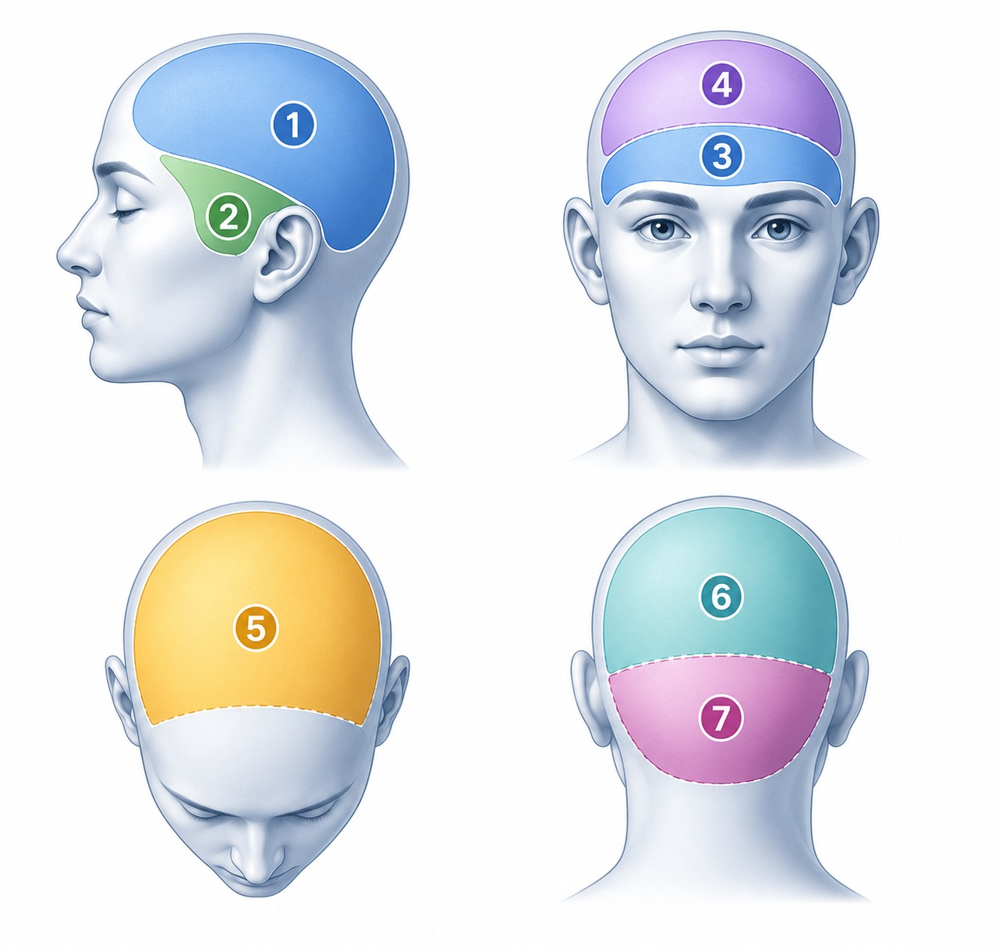

TERABACA
TERABACA adalah perangkat asesmen pra-diagnostik (skrining awal) yang dikembangkan oleh KABACA Pro untuk membantu mengenali pola pikir, emosi, perilaku, potensi, kebutuhan pendampingan, serta dinamika relasi seseorang melalui analisis bahasa coretan dan gambar.
TERABACA bukan psikotes, bukan alat diagnosis medis, dan bukan alat untuk memberikan vonis. Hasil asesmen digunakan sebagai bahan pemetaan awal agar proses pendampingan, edukasi, maupun rujukan dapat dilakukan secara lebih tepat.
Pendekatan TERABACA mengintegrasikan berbagai keilmuan sehingga pembacaan dilakukan secara holistik, dengan mempertimbangkan simbol visual, grafologi, perkembangan individu, dinamika keluarga, komunikasi, serta aspek biologis, psikologis, sosial, dan spiritual.
Dalam praktiknya, TERABACA tidak hanya berfokus pada menemukan permasalahan, tetapi juga membantu mengidentifikasi kekuatan, potensi, area pengembangan, dan rekomendasi treatment yang dapat diterapkan sesuai kebutuhan individu.
TERABACA merupakan perangkat asesmen milik KABACA Pro.
Apa Saja yang Terbaca?
8 Aspek Dasar Anak
Memetakan motorik halus, motorik kasar, rasionalitas, komunikasi interpersonal & intrapersonal, manajemen, imajinasi, serta jiwa berprestasi anak.
8 Kebutuhan Peran Kebundaan (Motherly)
Membaca tingkat inner sensitivity, ketangguhan (toughness), kesabaran, motherhood, pengembangan diri, tanggung jawab, serta aware & belief system.
Potensi, Emosi & Jendela Persepsi
Mampu melihat persepsi anak ke-1 sampai ke-5 terhadap orang tuanya secara detail, memetakan potensi tersembunyi, hingga menyeimbangkan gaya belajar anak.
12 Keilmuan Fondasi
Berdasarkan petunjuk para ahli di TERABACA, pendekatan TERABACA dibangun dari integrasi berbagai keilmuan yang saling melengkapi.
Kesenirupaan
Membaca pola pikir, emosi, perilaku, dan kecenderungan bawah sadar melalui coretan dan bentuk visual yang dihasilkan seseorang.
Neuro Grafika Art
Teknik menggambar berbasis neurografika untuk membantu membentuk koneksi berpikir baru dan mengubah respon terhadap suatu kondisi.
Sedona Methods
Teknik melepaskan keterikatan emosi, pikiran, dan beban mental yang menghambat pertumbuhan diri.
Silva Methods
Metode pengelolaan kondisi kesadaran dan gelombang otak untuk mengoptimalkan potensi pikiran dan intuisi.
Neuro Linguistik Programing
Keilmuan tentang bahasa, pola pikir, dan perilaku untuk membangun perubahan yang lebih efektif.
Grafologi
Keilmuan membaca karakter, pola pikir, emosi, dan kecenderungan perilaku melalui tulisan tangan.
S.E.M
Pendekatan energi untuk membantu menyeimbangkan kondisi fisik, mental, emosional, dan respon tubuh terhadap berbagai pengalaman hidup.
Aritmatika
Pendekatan numerik untuk membaca pola, struktur berpikir, logika, dan kecenderungan pengambilan keputusan.
Fibonacci Struktur
Keilmuan yang mempelajari pola pertumbuhan dan keteraturan alam sebagai acuan memahami struktur dan keseimbangan kehidupan.
Avasinologi
Pendekatan kesehatan holistik berbasis keilmuan Avasinologi untuk mendukung keseimbangan tubuh, pikiran, dan kualitas hidup.
Analisis Harmonik Gelombang
Analisis pola gelombang dan frekuensi untuk membantu memahami kecenderungan kondisi fisik, mental, dan emosional seseorang.
Persamaan Trigonometri
Pendekatan matematis untuk memahami hubungan, keteraturan, dan keseimbangan antar unsur dalam suatu sistem.
Apa itu Terapi Titik Sentuh?
Selain hasil asesmen, testee (peserta tes) akan mendapatkan treatment tambahan berupa terapi stimulasi khusus.
Terapi Titik Sentuh merupakan terapi praktis sehari-hari yang didesain oleh tim ahli TERABACA serta telah memiliki lisensi berdasarkan keilmuan kedokteran Islam (avasinologi) Ibnu Ruman yang bertujuan untuk meremajakan sel.

Peta Stimulasi Area Kepala (1-7)Penentuan Area Sentuh
Nomor bagian kepala/area sentuh kepala (Area 1 hingga 7 pada peta) yang didapatkan oleh peserta merupakan area spesifik yang wajib diremajakan selnya.
Durasi Program 21 Hari
Setelah peserta melakukan proses tes dan mendapatkan hasil, peserta secara mandiri mempraktikkan terapi stimulasi ini selama 21 hari berturut-turut di rumah masing-masing.
Pendampingan Praktisi
Peserta diberikan fasilitas penuh untuk dapat berkonsultasi secara intensif dengan praktisi resmi kami selama masa proses terapi berlangsung.
3 Langkah Mudah Mengikuti Tes
Siapkan media tes Anda secara mandiri sebelum terhubung ke admin WhatsApp kami
Media Kertas
Siapkan 4-5 lembar kertas A4 80 gsm polos berwarna putih bersih (jangan bergaris), siapkan juga crayon atau spidol atau pensil warna atau cat air.
Buat Coretan
Gambaran proses yang akan dipandu. Buat Coretan: lembar 1. benang Kusut, lembar 2. lingkaran, lembar 3. gambar bebas, lembar 4. tanda tangan dan nama jelas.
Foto & Kirim
Foto kertas secara tegak lurus (sejajar), pastikan tulisan tajam, terang, dan tanpa bayangan.
Pilihan Paket Terabaca
Masih bingung memilih paket atau ingin berkonsultasi terlebih dahulu?
💬 Hubungi Kami (Tanya-Tanya Dulu)Kategori Personal
BASIC
- 8 Aspek Dasar & 6 Aspek Emosi
- Persepsi Terhadap Emosi Orangtua
- Terapi Titik Sentuh Kepala Harian
Kategori Personal
PARENT
- 8 Aspek Dasar Motherly / Fatherly
- 6 Aspek Emosi & Persepsi Anak
- Terapi Titik Sentuh Kepala Harian
Kategori Personal
TALENT
- 8 Aspek Dasar & 4 Modal Dasar
- Unjuk Kerja & Gaya Belajar
Kategori Personal
BRAINWAVE
Analisis super lengkap mencakup seluruh aspek dasar, gaya belajar, unjuk kerja, ditambah penggunaan 8 spektrum gelombang otak harian.
🎧 Termasuk Perangkat Brainwave